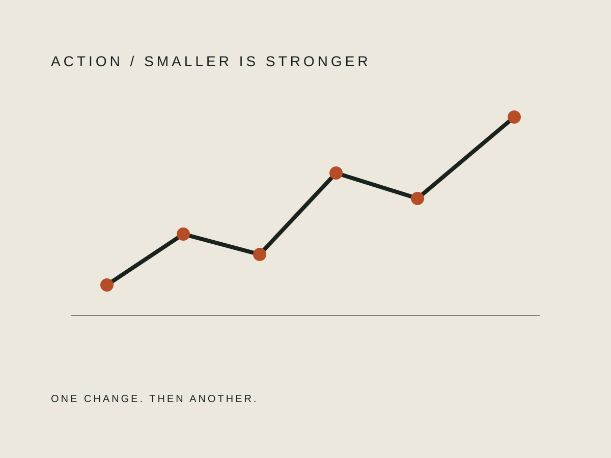
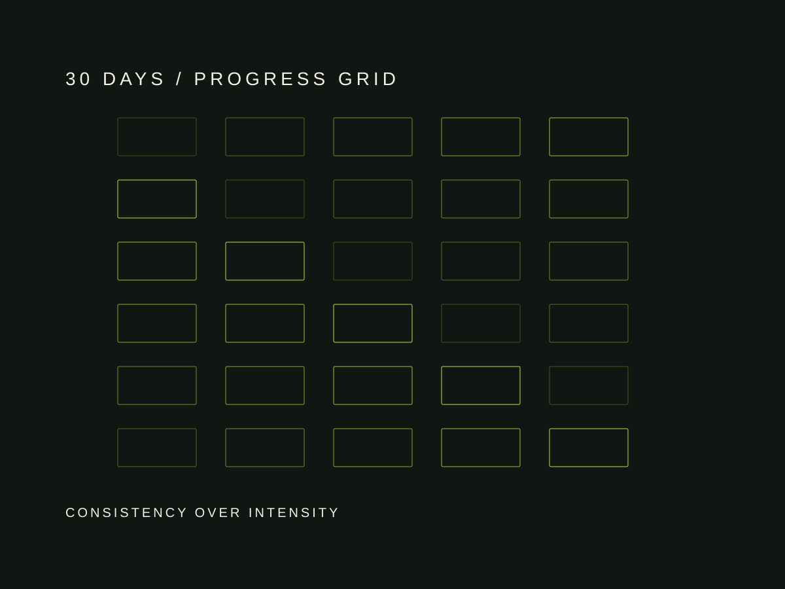

いつもの移動に、10分だけ足す。
散歩、買い物、通勤など、生活の中で増やせる身体活動から。厚生労働省系の支援資料も「今より少しでも多く」を入口にしています。
体力が落ちたと感じたとき、全部を一度に立て直す必要はありません。まず今より少し多く動く。続けられる負荷を探す。

強さより、
次の日もできること。
散歩、買い物、通勤など、生活の中で増やせる身体活動から。厚生労働省系の支援資料も「今より少しでも多く」を入口にしています。
勢いで立たず、痛みのない範囲で。回数を増やすよりフォームと継続を優先します。
疲労を無視して連日負荷を上げるのではなく、体調の波を前提に組み立てます。
睡眠と生活リズムは体力感に関わります。完璧なルーティンではなく、崩れ幅を小さくするところから。

最初の一週間は、頑張る量ではなく「ゼロの日を減らす」ことを目標に。
楽に続いたものだけ、時間か回数を小さく上げる。痛みや強い疲労が出るなら戻す。
歩く、軽い筋力運動、睡眠リズムを一度にではなく順番に重ねる。
30日前の自分と比較する。体重だけでなく、階段、朝の重さ、歩く量を見直す。
胸痛、失神、急な息苦しさなど不安な症状がある場合や、医師から運動制限を受けている場合は、自己判断で負荷を上げず医療機関へ相談してください。